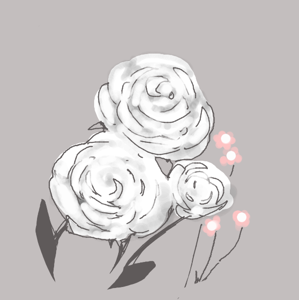

reading
1. What would be a good definition of how any kind of artist can use an algorithm in their art?
Anything that is repeatable steps or logic-based procedures for executing a task could be called an algorithm. Even if they're not necessarily using a computer or any modern technology, many artists probably employ something
similar to an algorithm in their work.
2.Give some examples of how you might already use algorithms in your own artwork.
Photoshop or any software uses a lot of algorithms that are already built in. As for ones that I end up making myself, in a broad sense, I have a pretty usual process for drawing that I stick to: gesture thumbnail, rough
sketch, lineart, base colors, rough shading, refine, refine, refine, liquify, adjust color, upload. It's something very close to that no matter what I'm doing. On a more practical, specifically tech-ish level, sometimes I also
use Droplets or Bridge for managing a drawing or photo set that is large or Photoshop Actions to apply a bunch of adjustments uniformly across a lot of images.
3.Look at the 4 artists above and please describe for each one, 'where' do you think the art is and how would you talk about the process of the 'art' vs the art 'artifact'. For example, If an artist is using computers to
generate art, where is the art? Is it in the software program or the product it makes?
The art is both the process of creation and the collective final product, both parts lend context to one another, are necessary, and would be lesser with a clear distinction.
4.What is an example of a well known artist that has an iconic style to you?
Please summerize a basic 'ingredient list' and process that might create their style.
Most of the artists I like I think use a pretty similar process to the one I use that I described in question 2.
5.Given that the recipes/instructions are about different subject matter (food, building things, etc)
Please summerize the differences of all 5 recipes in terms of their style, detail and scope of describing their instructions. How do they describe what the tasks are and why are their styles different?
5. Pizza is interactive with checklists, uses video, open to wide variation and customization. Toothbrush has drawn animations. RPSLS shows videos of each iteration of play, has specific ruleset that has to be followed that way
to play the game. Instruction is kind of introspective and uses traced pictures. Airplane one is unrealistic but interesting to read.
drawing language
code sketches
exercise 1
This is an simple exercise that shows P3 concepts on a basic level.
try it here
see the code here
exercise 2
This is an simple exercise that shows more P3 concepts on a basic level.
try it here
see the code here
project i
exercise 1
This is a drawing tool. It allows for drawing in 3 colors. Users can adjust the size, opacity, and color of the brush tool, and their settings will persist simultaneously.
see the code here
Examples of images drawn with this tool:
